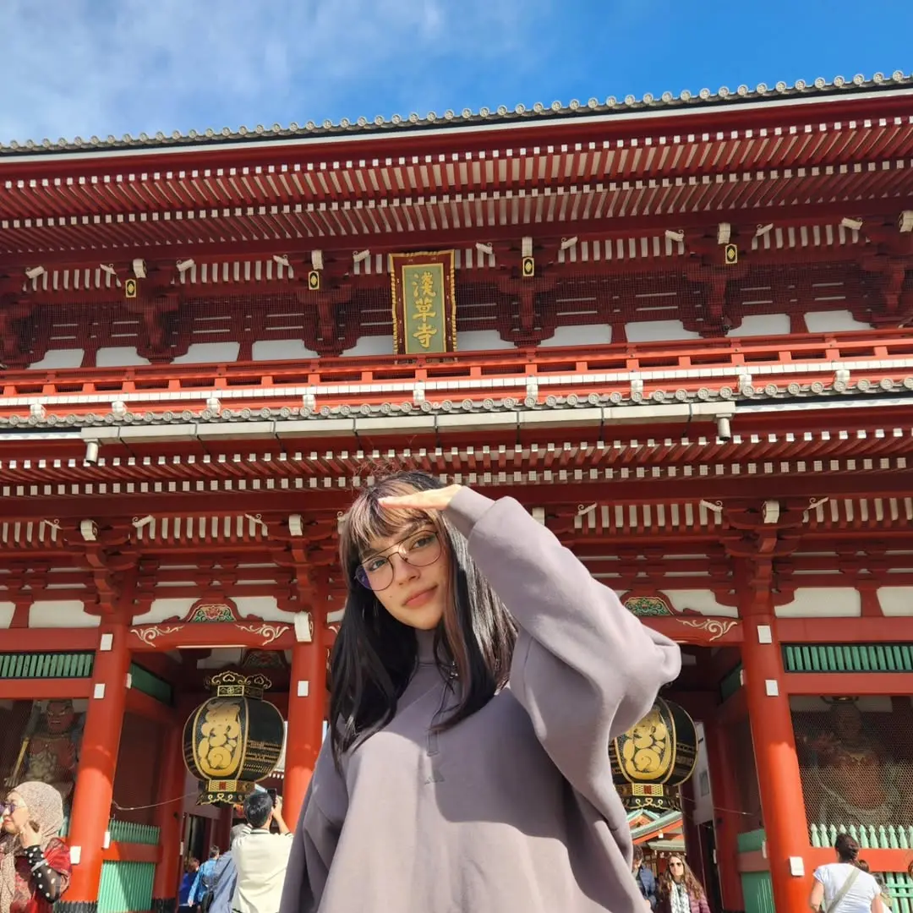

Exploring the hidden microbial life that supports sustainable agriculture.

Mariajosé Carvajal es investigadora en microbiología y genética de levaduras, afiliada al Departamento de Fruticultura de la Pontificia Universidad Católica de Chile y colaboradora activa del Laboratorio de Microbiología y Genética de Levaduras (YeastLab).
Su trayectoria académica incluye una licenciatura en Agronomía por la PUC, un Magíster en Fisiología y Producción Vegetal en la misma casa de estudios, y actualmente cursa un Doctorado en Ciencias Agrícolas y Sistemas Naturales. Su formación integra la biología molecular, la microbiología del suelo y la biotecnología agrícola.
Su investigación se centra en la identificación, caracterización y evaluación de levaduras y hongos nativos de Chile con potencial biotecnológico para la agricultura sostenible. Su trabajo tiende puentes entre la microbiología molecular y la innovación agrícola a escala de campo, con un enfoque en los mecanismos moleculares que median la comunicación entre microorganismos y plantas.
Su nombre aparece como coautora en publicaciones arbitradas en revistas internacionales de alto impacto como Plant and Soil y BioControl, contribuyendo al avance del conocimiento sobre las interacciones microbianas nativas en sistemas agrícolas.
Artículos arbitrados en revistas internacionales de alto impacto, avanzando la comprensión de las interacciones microbianas nativas en sistemas agrícolas sostenibles.
Screening for indole-3-acetic acid synthesis and ACC deaminase activity in soil yeasts from Chile uncovers Solicoccozyma terrea as an effective plant growth promoter.
Volatile organic compounds produced after exposure of tomato roots to the soil yeast Solicoccozyma terrea modulate root nitrate transporters in tomato.
Potential of an entomopathogenic fungus from the Cladosporium cladosporioides species complex for aphid control.
Root nitrate transporters expression and localization in tomato respond differently to soil yeasts with ACC deaminase activity or indole-3-acetic acid synthesis.
Un conjunto de técnicas avanzadas de biología molecular y microbiología para explorar la interfaz suelo–planta–microorganismo, desde el campo hasta el laboratorio.
Los descubrimientos microbianos en suelos nativos chilenos están reimaginando cómo alimentamos al mundo de manera sostenible.
Mariajosé comparte su investigación en congresos científicos internacionales y vive cada experiencia con mucha pasión. Si quieres ver un poco de su día a día y cómo avanza su trabajo, puedes seguirla en Instagram. @cote.carvajal.tv.
Mariajosé documenta su camino a través de la ciencia, la vida de laboratorio y la naturaleza en Instagram, y mantiene su perfil académico público en ORCID.